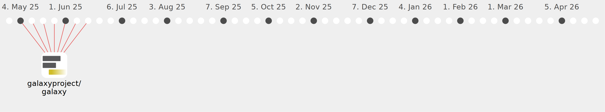

ElectronicBlueberry

Commits all-time: 1437
Commits last year: 405

(402)
- 06d870e
- 59f7846
- dfb9970
- f5b2cab
- 1ea75e1
- 9777bde
- 56946f9
- ffc6e1d
- 4747e87
- b73905b
- 3283d6a
- 37b2d4e
- 47f0ea3
- a14191c
- 1436031
- a3226ae
- 306ef42
- f8b8fe9
- 66efcb0
- 30df771
- dc44c14
- b2aee86
- d35a330
- e8ed57d
- fdd3b11
- 2b58286
- 9ceee38
- 02c7511
- 1a55ad8
- 2cd580f
- c460dd7
- 859ff83
- c9e0483
- c642f03
- ef8aab1
- 0f4eb0f
- 377e0d5
- 62285a3
- bd36e02
- 2f9f9c2
- fa4aa6d
- 6c1b64c
- dbe8d24
- 8391148
- bb599c6
- 136b68f
- 7592958
- 4dd15a8
- 89aad6a
- 46f30b6
- 5806bcf
- 12ad230
- 859c80d
- 8df1987
- b9d87a9
- 049f9db
- 32c60ce
- 90f1e59
- 87c445f
- c8db62f
- 1d4090f
- 71e8c7f
- 7300e7b
- 9d77fc8
- 8522aaa
- df3cbbf
- 8dca4d2
- 92096c7
- 7f88c81
- bc1248b
- 6073a1d
- b519f99
- 3dbe6f8
- ecbebaa
- 3f83f53
- c04f53e
- 4f8727a
- ab5e901
- 28c488c
- 8efcc27
- 0fb7502
- e2c1558
- 46a4c7b
- a3c702c
- 65dec1e
- bd723ef
- dcc65a9
- e2e65b1
- 1ce4376
- ae58b8d
- 0be4c1d
- 410be18
- 205e6d3
- 62b6ed2
- 60a0df4
- 60ef378
- f02441e
- f440a86
- 255a2d9
- 3bb365b
- 033f86f
- 169496f
- 47392d6
- 81a4b95
- b191a19
- cd5ef66
- 7b96c14
- c98a167
- 5c6058d
- b761aa4
- 02be147
- 3bddb47
- 01b2bb9
- f4c31c1
- 5dbe5e8
- a478e03
- 1abe124
- 9c94e66
- 1aebab7
- b2e0051
- 140d94e
- c06c0a3
- 1234a56
- 33f4c38
- 1c1aea4
- daad64d
- 869f561
- 98baca5
- 70391a9
- 7b8e162
- 1ff3dc0
- a5aeaa7
- 946d2ff
- 4346f2d
- f1c68dc
- 75e9b2d
- 88a24e6
- 46aff8e
- 7f98026
- 2cd6b9b
- 3ff1116
- 1d9df1d
- 7f5bebb
- ab1e8d9
- cb10614
- 13c9c77
- 45966ea
- 628379e
- 97dbde1
- 4a9ecc5
- 88a88e4
- 1e3a68a
- 6fa52cb
- af0d8fa
- e352336
- 797bbb4
- a381310
- 63aaaad
- 9fbfdc8
- 7b3453a
- cb322e5
- 40b0e61
- 9979a13
- 0af713c
- 1b2fe7a
- 0cab266
- b19cbe4
- 9524aab
- f6ec31a
- d25f9eb
- fc5f2f0
- 1f61116
- 5c02c41
- d4f1ceb
- df4f7d4
- 09bcf33
- 866b2df
- 263f0d6
- 80ac0c1
- 320a0f1
- 5855a2f
- 5b0150e
- 802c6da
- a472750
- d9d1c15
- 11519d4
- 530be00
- 4a33bca
- 7596e6a
- 21ceb30
- 4f7dd00
- 6c3b2ce
- b84ad70
- 0873c1b
- a16574a
- 61fef86
- 852fc4c
- 1cad7f7
- abe326a
- 8b0d78b
- b565fea
- c11cba1
- d899b92
- 477546e
- 5c8b958
- 1dca036
- 8979126
- 43ddb6d
- a7ea379
- 123843e
- 127893f
- 8d26e19
- ea06e77
- 63a67ec
- 8a2edfc
- 6e7585c
- d894082
- 90e6393
- f0c8376
- cf9b302
- 0d7561d
- fa384b7
- d0da7e7
- f1e3ba4
- ff0d12b
- f58ba5c
- 8315a04
- 7bd8145
- fd042d2
- 36de47d
- 79f663c
- ba0f0d4
- f4e37c9
- 4fac7da
- 09fb715
- 1015134
- 422ac20
- e1c9e7f
- 9d0ce93
- 5f484fc
- 34d1272
- f3e9ff4
- 501e312
- adf5293
- 4b4fd1f
- 6b34f21
- f06b0d7
- c9bba69
- 2b97dac
- dac9299
- 4f5c146
- 309ac4e
- 33723c3
- 401d558
- b91415d
- e8d900e
- a0b1c86
- 0b09625
- 1a11037
- 179d634
- b15ed48
- ebabe9b
- 62d046e
- 265a439
- d00e376
- 8449873
- ac89ccd
- 8ad8221
- 61de85d
- ed093cb
- 2a820d4
- ff6b567
- bd8a5a1
- 4083580
- 52c4de4
- 38224b1
- b489bd5
- 4df4a54
- 8dfbc2a
- 988d47a
- e907457
- 1ae03b3
- d7b6a6e
- 53bf612
- 3526a42
- 8e7d8b7
- 1116570
- 4557478
- 602665e
- 282ec87
- 66ed471
- dcb3978
- ac74321
- 6a31907
- 7b82f51
- 9ae55b0
- 863527f
- 4a84554
- a3b496b
- b93aab6
- 1605384
- f344df0
- a44dc34
- 34598a0
- 3bc870e
- 46aa036
- 74f0e3d
- b202a78
- 24f9eca
- cf7aa2c
- 5ea3281
- fdce0f3
- 5c2105d
- 4924996
- 6d2867f
- 07e4371
- 0a04e81
- fa7b1c8
- a8cb0ea
- 56e71a1
- 137217f
- 7d3fdcc
- 31fb902
- 81415e6
- 6f92dcd
- f4c0393
- 9148d87
- 49d2528
- 4e2417f
- 4a4e0c9
- 333b855
- 1331993
- 8b0e0bc
- 80385f2
- 126f1e1
- 1444d4c
- 93695f4
- 0a6ebde
- 5573302
- 37e91a2
- abbc5f3
- 093e29f
- 7dc48c8
- 92c8df6
- 48c5770
- 4af70ec
- 40b8fd7
- c3841ad
- 3e607e2
- 9b59f38
- 1a8d4c9
- 7c21881
- 56667de
- 8b4260e
- c5a00b7
- af36b5c
- a0cc2f4
- c73ca35
- 1d81ba7
- ef6125e
- c8a78cc
- 3bbc1a6
- 4c4aaf2
- d4b5acc
- 9430408
- 119e9e7
- 9245f83
- dfe0269
- 934d178
- 3d6dd63
- 4e7f8dd
- 315c82e
- 8347404
- 35826e3
- 45915a3
- 5c60ccd
- 6804664
- 8de570d
- 37fcaa6
- e7b60b7
- 4a431c4
- 090f0d6
- 14da48f
- be20913
- 7eaf6bf
- 79a6944
- 8545347
- 8166739
- 47b061b
- b59d12a
- c8d874c
- 88b0e13
- f104407
- 1b96ceb
- 880871f
- 06c7594
- fec6ebf
- bb676d9
- daec7e1
- 60c107c
- 9f4b91a
- c7a257d
(3)